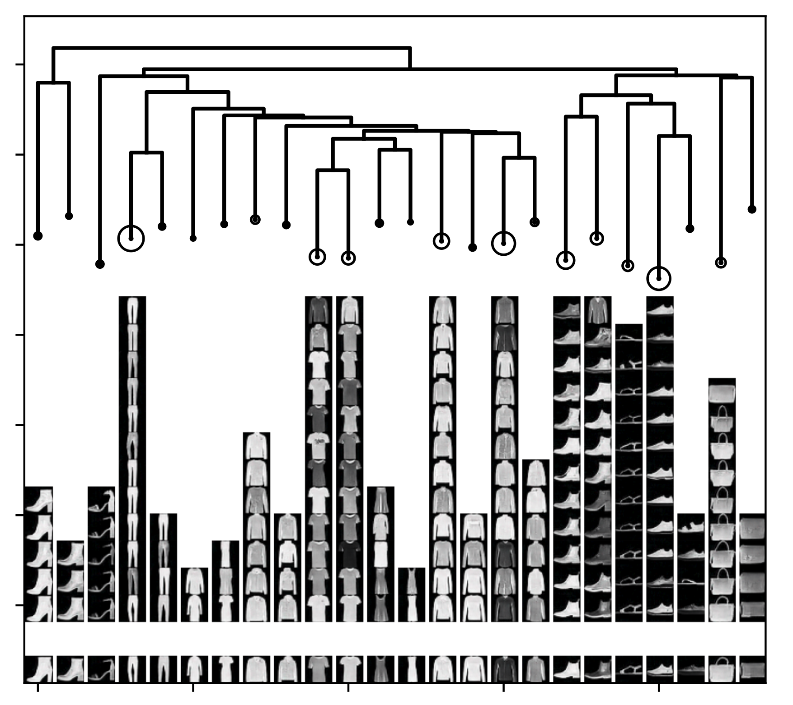

My current research has two major branches:
Energy-based learning with ConvNet functions exhibits surprising behaviors not encountered for earlier energy functions. My research identifies two types outcomes: convergent learning and non-convergent learning. Convergent learning is consistent with conventional expectations but is very difficult to achieve. Non-convergent learning is an unexpected phenomenon that occurs for ConvNet energy functions.
 The local modes of an energy function are stable states that appear with high probability. Related groups of local modes form macroscopic non-convex structures that are analagous to folding funnels of protein potentials. My work uses a novel MCMC algorithm to detect metastable structures of learned energy functions that correspond to intuitive image concepts.